Hyperbolic functions#
For a general introduction into hyperbolic functions, see Wikipedia [1236], NIST [485].
Hyperbolic sine, \(\mathrm{sinh}(x)\)#
- ctx.sinh(x)#
where
ctxismath53,mathc53,ctxcpp,ctxflint.Returns the hyperbolic sine of \(x\), \(\sinh(x)\). See also Wikipedia [1236], MathWorld [864], NIST [485], Ehrhardt [297] (4.2.56), Flint [739], Flint [729], Mpmath [565].
The hyperbolic sine can be expressed in terms of the exponential function as \(\displaystyle \sinh(x) = \frac{e^x - e^{-x}}{2} = \frac{e^{2x-1}}{2e^x} = \frac{1-e^{-2x}}{2e^x}\).
The complex hyperbolic sine can be expressed in terms of related functions:
\[\sinh(z) = \frac{e^z - e^{-z}}{2} = \frac{e^{2z-1}}{2e^z} = \frac{1-e^{-2z}}{2e^z} = -i \sin(iz)\]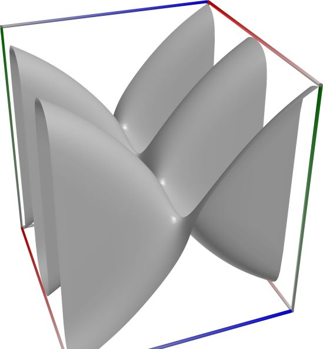
\(\quad\)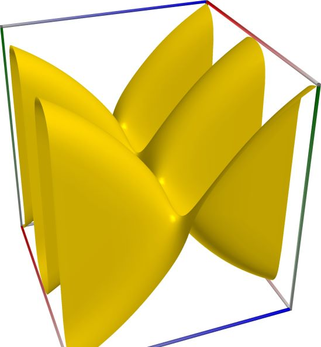
\(\quad\)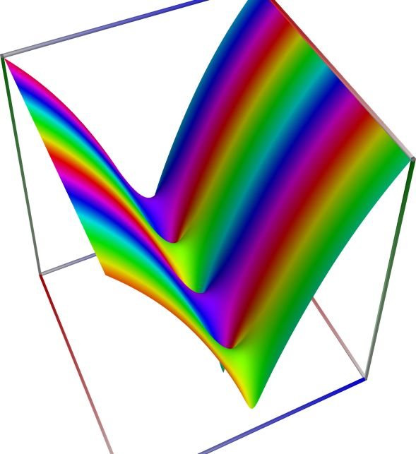
3D wpf plot: real part (left figure), imaginary part (middle figure) and absolute value with color-coded phase (right figure) of the complex sine function \(z = \sin(x + iy)\), with \(-6 \le x \le 6\) (blue axis), \(-6 \le y \le 6\) (red axis), \(-10 \le z \le 10\) (green axis). Function values are loglog-transformed.
An example with real input:
>>> from xlcalcnet import * >>> x = -5.1; dps = 90 >>> for ctx in gui.ctxlist_real: print(ctx.fmtname + ': ' + ctx.fmt(ctx.sinh(x))) fpm: -82.0079052766681 mpm: -82.0079052766681141545205633686177513941394010328237480835357225436636641711205506993986109 dpm: -82.0079052766681141545205633686177513941394010328237480835357225436636641711205506993986109 ipm: [-82.00790527666811415452056336861775139413940103282374808353572254366366417112055069939861090531, -82.007905276668114154520563368617751394139401032823748083535722543663664171120550699398610811055] gpm: -82.007905276668114154520563368617751394139401032823748083535722543663664171120550699398610905 apm: [-82.007905276668114154520563368617751394139401032823748083535722543663664171120550699398611 +/- 2.87e-88] math53: -82.0079052766681 sreal: -82.0079 dreal: -82.0079052766681 ereal: -82.00790527666811415 qreal: -82.0079052766681141545205633686177 oreal: -82.007905276668114154520563368617751394139401032823748083535722543663666 mreal: -82.0079052766681141545205633686177513941394010328237480835357225436636641711205506993986108 sflint: -82.0079 dflint: -82.0079052766681 eflint: -82.00790527666811415 qflint: -82.0079052766681141545205633686177 oflint: -82.007905276668114154520563368617751394139401032823748083535722543663663 mflint: -82.0079052766681141545205633686177513941394010328237480835357225436636641711205506993986108 aflint: [-82.007905276668114154520563368617751394139401032823748083535722543663664171120550699398611 +/- 3.55e-88]
An example with complex input, using C#-style formatting for complex numbers for the result
>>> from xlcalcnet import * >>> x = -5.1+2j; gui.setdps(50) >>> for ctx in [fpm, mpm, cmath53, qcplx]: print(ctx.fmtname + ': ' + ctx.fmt(ctx.sinh(x))) fpm: (34.1273303527431, 74.5751210034026) mpm: (34.127330352743141373237210523324556546037419592941, 74.5751210034025920020108315658035526769122216305) cmath53: (34.1273303527431, 74.5751210034026) qcplx: (34.1273303527431413732372105233245, 74.5751210034025920020108315658035)
An example with the same complex input as above, showing only the real part of the result:
>>> from xlcalcnet import * >>> x = -5.1+2j; gui.setdps(90) >>> for ctx in gui.ctxlist_cplx: print(ctx.fmtname + ': ' + ctx.realctx.fmt(ctx.real(ctx.sinh(x)))) fpm: 34.1273303527431 mpm: 34.1273303527431413732372105233245565460374195929409012011940112788460177986368636136833045 dpm: 34.1273303527431413732372105233245565460374195929409012011940112788460177986368636136833045 ipm: [34.127330352743141373237210523324556546037419592940901201194011278846017798636863613683304477855, 34.127330352743141373237210523324556546037419592940901201194011278846017798636863613683304524982] gpm: 34.127330352743141373237210523324556546037419592940901201194011278846017798636863613683304517 apm: [34.1273303527431413732372105233245565460374195929409012011940112788460177986368636136833045 +/- 8.38e-89] cmath53: 34.1273303527431 scplx: 34.12733 dcplx: 34.1273303527431 ecplx: 34.127330352743141372 qcplx: 34.1273303527431413732372105233245 ocplx: 34.127330352743141373237210523324556546037419592940901201194011278846018 mcplx: 34.1273303527431413732372105233245565460374195929409012011940112788460177986368636136833045 sflintc: 34.12733 dflintc: 34.1273303527431 eflintc: 34.127330352743141369 qflintc: 34.1273303527431413732372105233245 oflintc: 34.127330352743141373237210523324556546037419592940901201194011278846017 mflintc: 34.1273303527431413732372105233245565460374195929409012011940112788460177986368636136833045 aflintc: [34.127330352743141373237210523324556546037419592940901201194011278846017798636863613683304 +/- 5.31e-88]
An example with the same complex input as above, showing only the imaginary part of the result:
>>> from xlcalcnet import * >>> x = -5.1+2j; gui.setdps(90) >>> for ctx in gui.ctxlist_cplx: print(ctx.fmtname + ': ' + ctx.realctx.fmt(ctx.imag(ctx.sinh(x)))) fpm: 74.5751210034026 mpm: 74.575121003402592002010831565803552676912221630500407960603836527843615129105284036390891 dpm: 74.575121003402592002010831565803552676912221630500407960603836527843615129105284036390891 ipm: [74.575121003402592002010831565803552676912221630500407960603836527843615129105284036390890944533, 74.575121003402592002010831565803552676912221630500407960603836527843615129105284036390891023078] gpm: 74.575121003402592002010831565803552676912221630500407960603836527843615129105284036390891023 apm: [74.575121003402592002010831565803552676912221630500407960603836527843615129105284036390891 +/- 2.02e-88] cmath53: 74.5751210034026 scplx: 74.57511 dcplx: 74.5751210034026 ecplx: 74.575121003402591993 qcplx: 74.5751210034025920020108315658035 ocplx: 74.575121003402592002010831565803552676912221630500407960603836527843616 mcplx: 74.5751210034025920020108315658035526769122216305004079606038365278436151291052840363908909 sflintc: 74.57511 dflintc: 74.5751210034026 eflintc: 74.575121003402591993 qflintc: 74.5751210034025920020108315658035 oflintc: 74.575121003402592002010831565803552676912221630500407960603836527843614 mflintc: 74.5751210034025920020108315658035526769122216305004079606038365278436151291052840363908909 aflintc: [74.575121003402592002010831565803552676912221630500407960603836527843615129105284036390891 +/- 4.07e-88]


Hyperbolic cosine, \(\mathrm{cosh}(x)\)#
- ctx.cosh(x)#
where
ctxismath53,mathc53,ctxcpp,ctxflint.Returns the hyperbolic cosine of \(x\), \(\cosh(x)\). See also Wikipedia [1236], MathWorld [861], NIST [485], Ehrhardt [297] (4.2.20), Flint [739], Flint [729], Mpmath [562].
The hyperbolic cosine can be expressed in terms of the exponential function as \(\displaystyle \cosh(x) = \frac{e^x + e^{-x}}{2} = \frac{e^{2x+1}}{2e^x} = \frac{1+e^{-2x}}{2e^x}\).
The complex hyperbolic cosine can be expressed in terms of related functions:
\[\cosh(z) = \frac{e^z + e^{-z}}{2} = \frac{e^{2z+1}}{2e^z} = \frac{1+e^{-2z}}{2e^z} = \cos(iz)\]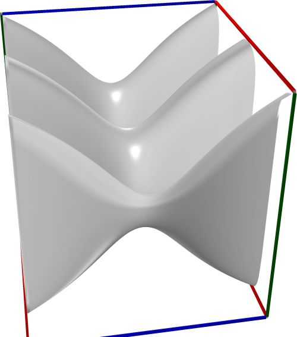
\(\quad\)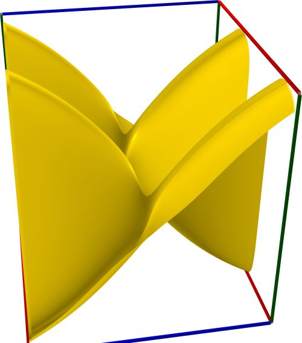
\(\quad\)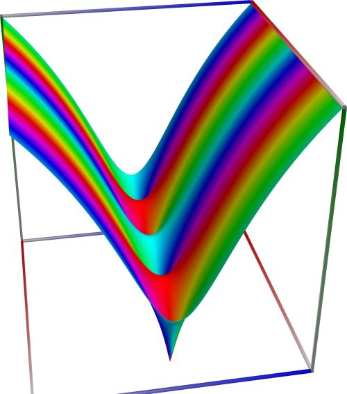
3D wpf plot: real part (left figure), imaginary part (middle figure) and absolute value with color-coded phase (right figure) of the complex sine function \(z = \sin(x + iy)\), with \(-6 \le x \le 6\) (blue axis), \(-6 \le y \le 6\) (red axis), \(-10 \le z \le 10\) (green axis). Function values are loglog-transformed.
An example with real input:
>>> from xlcalcnet import * >>> x = -5.1; dps = 90 >>> for ctx in gui.ctxlist_real: print(ctx.fmtname + ': ' + ctx.fmt(ctx.cosh(x))) fpm: 82.0140020232336 mpm: 82.014002023233629790627697933403176295928461074904416180844116259359621147488290047724371 dpm: 82.014002023233629790627697933403176295928461074904416180844116259359621147488290047724371 ipm: [82.014002023233629790627697933403176295928461074904416180844116259359621147488290047724370947407, 82.014002023233629790627697933403176295928461074904416180844116259359621147488290047724371041662] gpm: 82.014002023233629790627697933403176295928461074904416180844116259359621147488290047724371042 apm: [82.014002023233629790627697933403176295928461074904416180844116259359621147488290047724371 +/- 1.51e-88] math53: 82.0140020232336 sreal: 82.01399 dreal: 82.0140020232336 ereal: 82.014002023233629785 qreal: 82.0140020232336297906276979334032 oreal: 82.014002023233629790627697933403176295928461074904416180844116259359622 mreal: 82.014002023233629790627697933403176295928461074904416180844116259359621147488290047724371 sflint: 82.01399 dflint: 82.0140020232336 eflint: 82.014002023233629785 qflint: 82.0140020232336297906276979334032 oflint: 82.01400202323362979062769793340317629592846107490441618084411625935962 mflint: 82.014002023233629790627697933403176295928461074904416180844116259359621147488290047724371 aflint: [82.014002023233629790627697933403176295928461074904416180844116259359621147488290047724371 +/- 2.35e-88]
An example with complex input, using C#-style formatting for complex numbers for the result
>>> from xlcalcnet import * >>> x = -5.1+2j; gui.setdps(50) >>> for ctx in [fpm, mpm, cmath53, qcplx]: print(ctx.fmtname + ': ' + ctx.fmt(ctx.cosh(x))) fpm: (-34.1298674945396, -74.5695772474385) mpm: (-34.129867494539610360380497380623289780976115264134, -74.569577247438560321695246634081220109249101472313) cmath53: (-34.1298674945396, -74.5695772474385) qcplx: (-34.1298674945396103603804973806233, -74.5695772474385603216952466340812)
An example with the same complex input as above, showing only the real part of the result:
>>> from xlcalcnet import * >>> x = -5.1+2j; gui.setdps(90) >>> for ctx in gui.ctxlist_cplx: print(ctx.fmtname + ': ' + ctx.realctx.fmt(ctx.real(ctx.cosh(x)))) fpm: -34.1298674945396 mpm: -34.1298674945396103603804973806232897809761152641341354515699140637371286702921788179136254 dpm: -34.1298674945396103603804973806232897809761152641341354515699140637371286702921788179136254 ipm: [-34.129867494539610360380497380623289780976115264134135451569914063737128670292178817913625440466, -34.129867494539610360380497380623289780976115264134135451569914063737128670292178817913625401194] gpm: -34.129867494539610360380497380623289780976115264134135451569914063737128670292178817913625433 apm: [-34.1298674945396103603804973806232897809761152641341354515699140637371286702921788179136254 +/- 6.05e-89] cmath53: -34.1298674945396 scplx: -34.12986 dcplx: -34.1298674945396 ecplx: -34.12986749453961036 qcplx: -34.1298674945396103603804973806233 ocplx: -34.129867494539610360380497380623289780976115264134135451569914063737129 mcplx: -34.1298674945396103603804973806232897809761152641341354515699140637371286702921788179136254 sflintc: -34.12986 dflintc: -34.1298674945396 eflintc: -34.129867494539610356 qflintc: -34.1298674945396103603804973806233 oflintc: -34.129867494539610360380497380623289780976115264134135451569914063737128 mflintc: -34.1298674945396103603804973806232897809761152641341354515699140637371286702921788179136254 aflintc: [-34.129867494539610360380497380623289780976115264134135451569914063737128670292178817913625 +/- 4.39e-88]
An example with the same complex input as above, showing only the imaginary part of the result:
>>> from xlcalcnet import * >>> x = -5.1+2j; gui.setdps(90) >>> for ctx in gui.ctxlist_cplx: print(ctx.fmtname + ': ' + ctx.realctx.fmt(ctx.imag(ctx.cosh(x)))) fpm: -74.5695772474385 mpm: -74.5695772474385603216952466340812201092491014723131273188519617084152979215654084168141719 dpm: -74.5695772474385603216952466340812201092491014723131273188519617084152979215654084168141719 ipm: [-74.56957724743856032169524663408122010924910147231312731885196170841529792156540841681417194503, -74.569577247438560321695246634081220109249101472313127318851961708415297921565408416814171850776] gpm: -74.569577247438560321695246634081220109249101472313127318851961708415297921565408416814171929 apm: [-74.569577247438560321695246634081220109249101472313127318851961708415297921565408416814172 +/- 2.80e-88] cmath53: -74.5695772474385 scplx: -74.56956 dcplx: -74.5695772474385 ecplx: -74.569577247438560315 qcplx: -74.5695772474385603216952466340812 ocplx: -74.569577247438560321695246634081220109249101472313127318851961708415299 mcplx: -74.5695772474385603216952466340812201092491014723131273188519617084152979215654084168141719 sflintc: -74.56957 dflintc: -74.5695772474385 eflintc: -74.569577247438560315 qflintc: -74.5695772474385603216952466340812 oflintc: -74.569577247438560321695246634081220109249101472313127318851961708415297 mflintc: -74.5695772474385603216952466340812201092491014723131273188519617084152979215654084168141719 aflintc: [-74.569577247438560321695246634081220109249101472313127318851961708415297921565408416814172 +/- 4.70e-88]


Hyperbolic tangent, \(\mathrm{tanh}(x)\)#
- ctx.tanh(x)#
where
ctxismath53,mathc53,ctxcpporctxflint.Returns the hyperbolic tangent of \(x\), \(\tanh(x)\). See also Wikipedia [1236], MathWorld [865], NIST [485], Ehrhardt [297] (4.2.62), Flint [739], Flint [729], Mpmath [566].
The hyperbolic tangent can be expressed in terms of the exponential function as \(\displaystyle \tanh(x) = \frac{\sinh(x)}{\cosh(x)}= \frac{e^x - e^{-x}}{e^x + e^{-x}} = \frac{e^{2x-1}}{e^{2x+1}}\).
The complex hyperbolic tangent can be expressed in terms of related functions:
\[\tanh(z) = \frac{\sinh(z)}{\cosh(z)}= \frac{e^z - e^{-z}}{e^z + e^{-z}} = \frac{e^{2z-1}}{e^{2z+1}} = -i \tan(iz)\]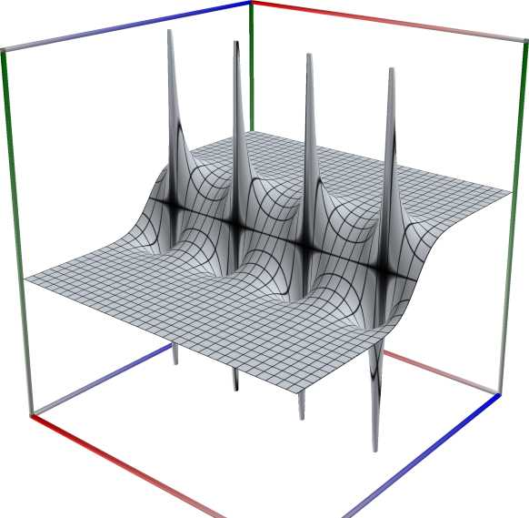
\(\quad\)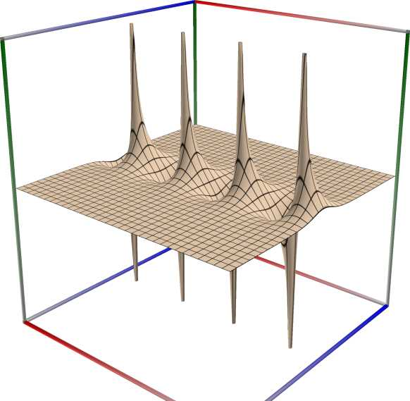
\(\quad\)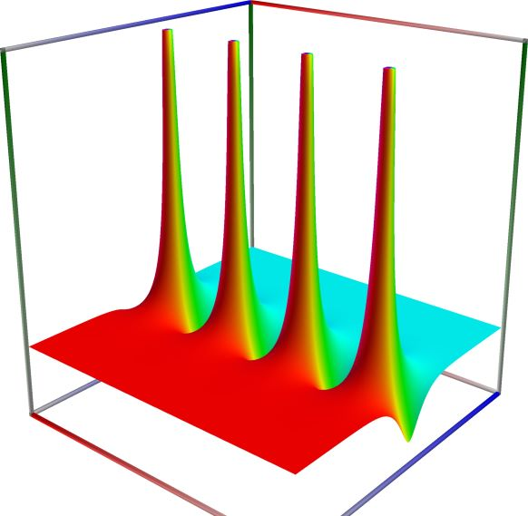
3D wpf plot: real part (left figure), imaginary part (middle figure) and absolute value with color-coded phase (right figure) of the complex sine function \(z = \sin(x + iy)\), with \(-6 \le x \le 6\) (blue axis), \(-6 \le y \le 6\) (red axis), \(-10 \le z \le 10\) (green axis). Function values are loglog-transformed.
An example with real input:
>>> from xlcalcnet import * >>> x = -5.1; dps = 90 >>> for ctx in gui.ctxlist_real: print(ctx.fmtname + ': ' + ctx.fmt(ctx.tanh(x))) fpm: -0.999925662125794 mpm: -0.999925662125794221120212921126762739312069318337668805513843194174689688748454165674311915 dpm: -0.999925662125794221120212921126762739312069318337668805513843194174689688748454165674311915 ipm: [-0.99992566212579422112021292112676273931206931833766880551384319417468968874845416567431191705008, -0.99992566212579422112021292112676273931206931833766880551384319417468968874845416567431191238644] gpm: -0.99992566212579422112021292112676273931206931833766880551384319417468968874845416567431191472 apm: [-0.999925662125794221120212921126762739312069318337668805513843194174689688748454165674311915 +/- 4.05e-91] math53: -0.999925662125794 sreal: -0.9999257 dreal: -0.999925662125794 ereal: -0.9999256621257942211 qreal: -0.999925662125794221120212921126763 oreal: -0.99992566212579422112021292112676273931206931833766880551384319417468969 mreal: -0.999925662125794221120212921126762739312069318337668805513843194174689688748454165674311915 sflint: -0.9999257 dflint: -0.999925662125794 eflint: -0.9999256621257942211 qflint: -0.999925662125794221120212921126763 oflint: -0.99992566212579422112021292112676273931206931833766880551384319417468969 mflint: -0.999925662125794221120212921126762739312069318337668805513843194174689688748454165674311915 aflint: [-0.999925662125794221120212921126762739312069318337668805513843194174689688748454165674311914 +/- 8.42e-91]
An example with complex input, using C#-style formatting for complex numbers for the result
>>> from xlcalcnet import * >>> x = -5.1+2j; gui.setdps(50) >>> for ctx in [fpm, mpm, cmath53, qcplx]: print(ctx.fmtname + ': ' + ctx.fmt(ctx.tanh(x))) fpm: (-1.00004859188124, -5.62639137773827E-05) mpm: (-1.0000485918812448393475235517731114546708209345587, -0.000056263913777382654389921405358580467341986339667902) cmath53: (-1.00004859188124, -5.62639137775E-05) qcplx: (-1.00004859188124483934752355177311, -5.62639137773826543899214053585805e-05)
An example with the same complex input as above, showing only the real part of the result:
>>> from xlcalcnet import * >>> x = -5.1+2j; gui.setdps(90) >>> for for ctx in gui.ctxlist_cplx: print(ctx.fmtname + ': ' + ctx.realctx.fmt(ctx.real(ctx.tanh(x)))) fpm: -1.00004859188124 mpm: -1.00004859188124483934752355177311145467082093455874283581980126296069519562811662786628308 dpm: -1.00004859188124483934752355177311145467082093455874283581980126296069519562811662786628308 ipm: [-1.0000485918812448393475235517731114546708209345587428358198012629606951956281166278662830827219, -1.0000485918812448393475235517731114546708209345587428358198012629606951956281166278662830778128] gpm: -1.0000485918812448393475235517731114546708209345587428358198012629606951956281166278662830803 apm: [-1.00004859188124483934752355177311145467082093455874283581980126296069519562811662786628308 +/- 2.68e-91] cmath53: -1.00004859188124 scplx: -1.000049 dcplx: -1.00004859188124 ecplx: -1.0000485918812448393 qcplx: -1.00004859188124483934752355177311 ocplx: -1.0000485918812448393475235517731114546708209345587428358198012629606952 mcplx: -1.00004859188124483934752355177311145467082093455874283581980126296069519562811662786628308 sflintc: -1.000049 dflintc: -1.00004859188124 eflintc: -1.0000485918812448393 qflintc: -1.00004859188124483934752355177311 oflintc: -1.0000485918812448393475235517731114546708209345587428358198012629606952 mflintc: -1.00004859188124483934752355177311145467082093455874283581980126296069519562811662786628308 aflintc: [-1.00004859188124483934752355177311145467082093455874283581980126296069519562811662786628308 +/- 1.21e-90]
An example with the same complex input as above, showing only the imaginary part of the result:
>>> from xlcalcnet import * >>> x = -5.1+2j; gui.setdps(90) >>> for ctx in gui.ctxlist_cplx: print(ctx.fmtname + ': ' + ctx.realctx.fmt(ctx.imag(ctx.tanh(x)))) fpm: -5.62639137773827E-05 mpm: -0.0000562639137773826543899214053585804673419863396679015681214248322560602571931291062300173585 dpm: -0.0000562639137773826543899214053585804673419863396679015681214248322560602571931291062300173585 ipm: [-0.000056263913777382654389921405358580467341986339667901568121424832256060257193129106230018310101547, -0.000056263913777382654389921405358580467341986339667901568121424832256060257193129106230016475071683] gpm: -5.6263913777382654389921405358580467341986339667901568121424832256060257193129106230017358493e-05 apm: [-5.6263913777382654389921405358580467341986339667901568121424832256060257193129106230017359e-5 +/- 5.25e-94] cmath53: -5.62639137775E-05 scplx: -5.626392E-05 dcplx: -5.62639137775E-05 ecplx: -5.6263913777382654402e-05 qcplx: -5.62639137773826543899214053585805e-05 ocplx: -5.6263913777382654389921405358580467341986339667901568121424832256055341e-05 mcplx: -5.62639137773826543899214053585804673419863396679015681214248322560602571931291062300173586E-05 sflintc: -5.626393E-05 dflintc: -5.62639137773827E-05 eflintc: -5.6263913777382654399e-05 qflintc: -5.62639137773826543899214053585805e-05 oflintc: -5.6263913777382654389921405358580467341986339667901568121424832256060259e-05 mflintc: -5.62639137773826543899214053585804673419863396679015681214248322560602571931291062300173586E-05 aflintc: [-5.6263913777382654389921405358580467341986339667901568121424832256060257193129106230017359e-5 +/- 5.54e-94]


Hyperbolic cotangent, \(\mathrm{coth}(x)\)#
- ctx.coth(x)#
where
ctxismath53,mathc53,ctxcpporctxflint.Returns the hyperbolic cotangent of \(x\), \(\mathrm{coth}(x)\). See also Wikipedia [1236], MathWorld [862], NIST [485], Ehrhardt [297] (4.2.22), Flint [739], Flint [729], Mpmath [563].
The hyperbolic cotangent can be expressed in terms of related functions as \(\displaystyle \mathrm{coth}(x) = \frac{\cosh(x)}{ \sinh(x)}= \frac{e^x + e^{-x}}{e^x - e^{-x}} = \frac{e^{2x+1}}{e^{2x-1}}\).
The complex hyperbolic cotangent can be expressed in terms of related functions:
\[\mathrm{coth}(z) = \frac{\cosh(z)}{ \sinh(z)}= \frac{e^z + e^{-z}}{e^z - e^{-z}} = \frac{e^{2z+1}}{e^{2z-1}} = i \cdot \cot(iz)\]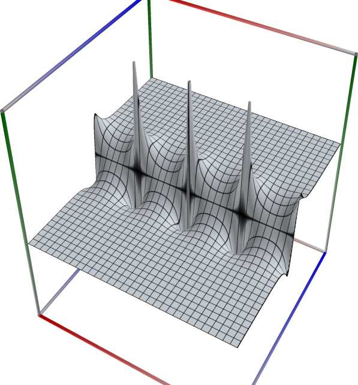
\(\quad\)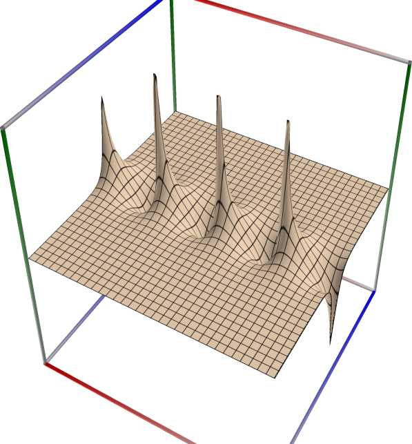
\(\quad\)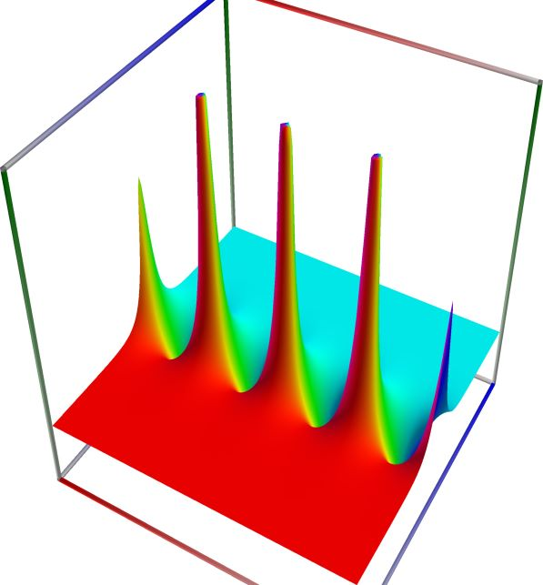
3D wpf plot: real part (left figure), imaginary part (middle figure) and absolute value with color-coded phase (right figure) of the complex sine function \(z = \sin(x + iy)\), with \(-6 \le x \le 6\) (blue axis), \(-6 \le y \le 6\) (red axis), \(-10 \le z \le 10\) (green axis). Function values are loglog-transformed.
An example with real input:
>>> from xlcalcnet import * >>> x = -5.1; dps = 90 >>> for ctx in gui.ctxlist_real: print(ctx.fmtname + ': ' + ctx.fmt(ctx.coth(x))) fpm: -1.00007434340074 mpm: -1.0000743434007361508335767133409363256989191644346135412826723630362121205216495195932365 dpm: -1.0000743434007361508335767133409363256989191644346135412826723630362121205216495195932365 ipm: [-1.0000743434007361508335767133409363256989191644346135412826723630362121205216495195932365021592, -1.0000743434007361508335767133409363256989191644346135412826723630362121205216495195932364972501] gpm: -1.0000743434007361508335767133409363256989191644346135412826723630362121205216495195932364997 apm: [-1.00007434340073615083357671334093632569891916443461354128267236303621212052164951959323650 +/- 5.42e-91] math53: -1.00007434340074 sreal: -1.000074 dreal: -1.00007434340074 ereal: -1.0000743434007361509 qreal: -1.00007434340073615083357671334094 oreal: -1.0000743434007361508335767133409363256989191644346135412826723630362121 mreal: -1.0000743434007361508335767133409363256989191644346135412826723630362121205216495195932365 sflint: -1.000074 dflint: -1.00007434340074 eflint: -1.0000743434007361508 qflint: -1.00007434340073615083357671334094 oflint: -1.0000743434007361508335767133409363256989191644346135412826723630362121 mflint: -1.0000743434007361508335767133409363256989191644346135412826723630362121205216495195932365 aflint: [-1.00007434340073615083357671334093632569891916443461354128267236303621212052164951959323650 +/- 2.02e-90]
An example with complex input, using C#-style formatting for complex numbers for the result
>>> from xlcalcnet import * >>> x = -5.1+2j; gui.setdps(40) >>> for ctx in [fpm, mpm, cmath53, qcplx]: print(ctx.fmtname + ': ' + ctx.fmt(ctx.coth(x))) fpm: (-0.999951407314645, 5.62584460589937E-05) mpm: (-0.9999514073146447984875179156067743120767, 0.00005625844605899370002512314070473795787144) cmath53: (-0.999951407314645, 5.62584460589937E-05) qcplx: (-0.999951407314644798487517915606774, 5.6258446058993700025123140704738e-05)
An example with the same complex input as above, showing only the real part of the result:
>>> from xlcalcnet import * >>> x = -5.1+2j; gui.setdps(90) >>> for ctx in gui.ctxlist_cplx: print(ctx.fmtname + ': ' + ctx.realctx.fmt(ctx.real(ctx.coth(x)))) fpm: -0.999951407314645 mpm: -0.999951407314644798487517915606774312076727968274378666492772965444851556176388931696638204 dpm: -0.999951407314644798487517915606774312076727968274378666492772965444851556176388931696638204 ipm: [-0.99995140731464479848751791560677431207672796827437866649277296544485155617638893169663820599667, -0.99995140731464479848751791560677431207672796827437866649277296544485155617638893169663820133303] gpm: -0.99995140731464479848751791560677431207672796827437866649277296544485155617638893169663820366 apm: [-0.999951407314644798487517915606774312076727968274378666492772965444851556176388931696638204 +/- 4.58e-91] cmath53: -0.999951407314645 scplx: -0.9999515 dcplx: -0.999951407314645 ecplx: -0.99995140731464479856 qcplx: -0.999951407314644798487517915606774 ocplx: -0.99995140731464479848751791560677431207672796827437866649277296544485154 mcplx: -0.999951407314644798487517915606774312076727968274378666492772965444851556176388931696638204 sflintc: -0.9999514 dflintc: -0.999951407314645 eflintc: -0.99995140731464479851 qflintc: -0.999951407314644798487517915606774 oflintc: -0.99995140731464479848751791560677431207672796827437866649277296544485155 mflintc: -0.999951407314644798487517915606774312076727968274378666492772965444851556176388931696638204 aflintc: [-0.999951407314644798487517915606774312076727968274378666492772965444851556176388931696638204 +/- 9.49e-91]
An example with the same complex input as above, showing only the imaginary part of the result:
>>> from xlcalcnet import * >>> x = -5.1+2j; gui.setdps(90) >>> for ctx in gui.ctxlist_cplx: print(ctx.fmtname + ': ' + ctx.realctx.fmt(ctx.imag(ctx.coth(x)))) fpm: 5.62584460589937E-05 mpm: 0.0000562584460589937000251231407047379578714390419115763361591200068593664469953634862460015382 dpm: 0.0000562584460589937000251231407047379578714390419115763361591200068593664469953634862460015382 ipm: [0.000056258446058993700025123140704737957871439041911576336159120006859366446995363486246000654867428, 0.000056258446058993700025123140704737957871439041911576336159120006859366446995363486246002489702534] gpm: 5.6258446058993700025123140704737957871439041911576336159120006859366446995363486246001538191e-05 apm: [5.6258446058993700025123140704737957871439041911576336159120006859366446995363486246001538e-5 +/- 4.18e-94] cmath53: 5.62584460589937E-05 scplx: 5.625846E-05 dcplx: 5.6258446059111E-05 ecplx: 5.6258446058993700043e-05 qcplx: 5.6258446058993700025123140704738e-05 ocplx: 5.625844605899370002512314070473795787143904191157633615912000685936153e-05 mcplx: 5.62584460589937000251231407047379578714390419115763361591200068593664469953634862460015383E-05 sflintc: 5.625846E-05 dflintc: 5.62584460589937E-05 eflintc: 5.6258446058993700037e-05 qflintc: 5.6258446058993700025123140704738e-05 oflintc: 5.6258446058993700025123140704737957871439041911576336159120006859366449e-05 mflintc: 5.62584460589937000251231407047379578714390419115763361591200068593664469953634862460015383E-05 aflintc: [5.6258446058993700025123140704737957871439041911576336159120006859366446995363486246001538e-5 +/- 4.01e-94]


Hyperbolic cosecant, \(\mathrm{csch}(x)\)#
- ctx.csch(x)#
where
ctxismath53,mathc53,ctxcpporctxflint.Returns the hyperbolic cosecant of \(x\), \(\mathrm{csch}(x)\). See also Wikipedia [1236], MathWorld [860], NIST [485], Ehrhardt [297] (4.2.24), Flint [739], Flint [729], Mpmath [561].
The hyperbolic cosecant can be expressed in terms of the exponential function as \(\displaystyle \mathrm{csch}(x) = \frac{1}{\sinh(x)}= \frac{2}{e^x - e^{-x}} = \frac{2e^x}{1 - e^{-2x}}\).
The complex hyperbolic cosecant can be expressed in terms of related functions:
\[\mathrm{csch}(z) = \frac{1}{\sinh(z)}= \frac{2}{e^z - e^{-z}} = \frac{2e^z}{1 - e^{-2z}} = i \cdot \mathrm{csc}(iz)\]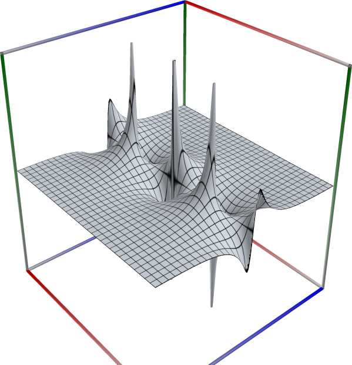
\(\quad\)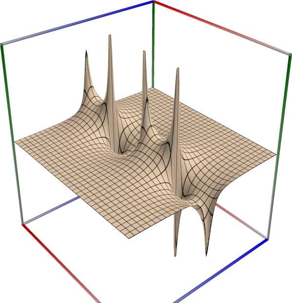
\(\quad\)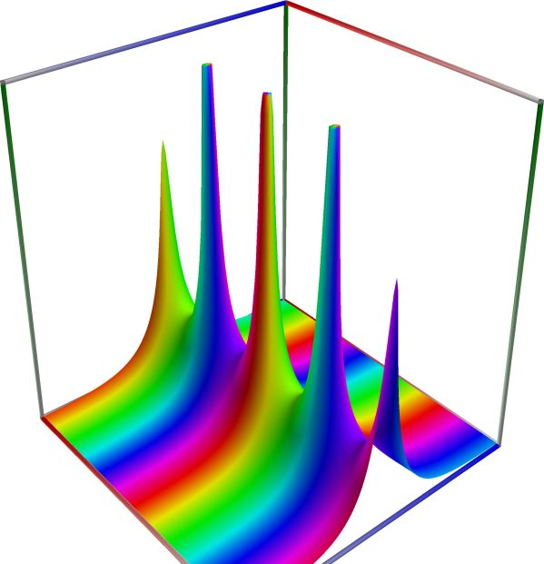
3D wpf plot: real part (left figure), imaginary part (middle figure) and absolute value with color-coded phase (right figure) of the complex sine function \(z = \sin(x + iy)\), with \(-6 \le x \le 6\) (blue axis), \(-6 \le y \le 6\) (red axis), \(-10 \le z \le 10\) (green axis). Function values are loglog-transformed.
An example with real input:
>>> from xlcalcnet import * >>> x = -5.1; dps = 90 >>> for ctx in gui.ctxlist_real: print(ctx.fmtname + ': ' + ctx.fmt(ctx.csch(x))) fpm: -0.0121939463839044 mpm: -0.0121939463839043790944768070183289049146842915913842240795486461790334825281401125472896425 dpm: -0.0121939463839043790944768070183289049146842915913842240795486461790334825281401125472896425 ipm: [-0.012193946383904379094476807018328904914684291591384224079548646179033482528140112547289642520826, -0.012193946383904379094476807018328904914684291591384224079548646179033482528140112547289642482474] gpm: -0.012193946383904379094476807018328904914684291591384224079548646179033482528140112547289642496 apm: [-0.0121939463839043790944768070183289049146842915913842240795486461790334825281401125472896425 +/- 2.16e-92] math53: -0.0121939463839044 sreal: -0.01219395 dreal: -0.0121939463839044 ereal: -0.012193946383904379095 qreal: -0.0121939463839043790944768070183289 oreal: -0.012193946383904379094476807018328904914684291591384224079548646179033482 mreal: -0.0121939463839043790944768070183289049146842915913842240795486461790334825281401125472896425 sflint: -0.01219395 dflint: -0.0121939463839044 eflint: -0.012193946383904379096 qflint: -0.0121939463839043790944768070183289 oflint: -0.012193946383904379094476807018328904914684291591384224079548646179033483 mflint: -0.0121939463839043790944768070183289049146842915913842240795486461790334825281401125472896425 aflint: [-0.0121939463839043790944768070183289049146842915913842240795486461790334825281401125472896425 +/- 1.98e-92]
An example with complex input, using C#-style formatting for complex numbers for the result
>>> from xlcalcnet import * >>> x = -5.1+2j; gui.setdps(40) >>> for ctx in [fpm, mpm, cmath53, qcplx]: print(ctx.fmtname + ': ' + ctx.fmt(ctx.csch(x))) fpm: (0.00507384842330909, -0.011087385277729) mpm: (0.005073848423309090237460026342247365091907, -0.01108738527772901508678094928817412357963) cmath53: (0.00507384842330909, -0.011087385277729) qcplx: (0.00507384842330909023746002634224737, -0.0110873852777290150867809492881741)
An example with the same complex input as above, showing only the real part of the result:
>>> from xlcalcnet import * >>> x = -5.1+2j; gui.setdps(90) >>> for ctx in gui.ctxlist_cplx: print(ctx.fmtname + ': ' + ctx.realctx.fmt(ctx.real(ctx.csch(x)))) fpm: 0.00507384842330909 mpm: 0.00507384842330909023746002634224736509190681132245925060733560970852500129290126086149715922 dpm: 0.00507384842330909023746002634224736509190681132245925060733560970852500129290126086149715923 ipm: [0.0050738484233090902374600263422473650919068113224592506073356097085250012929012608614971592187468, 0.0050738484233090902374600263422473650919068113224592506073356097085250012929012608614971592350465] gpm: 0.0050738484233090902374600263422473650919068113224592506073356097085250012929012608614971592235 apm: [0.00507384842330909023746002634224736509190681132245925060733560970852500129290126086149715923 +/- 9.09e-93] cmath53: 0.00507384842330909 scplx: 0.005073849 dcplx: 0.00507384842330909 ecplx: 0.0050738484233090902384 qcplx: 0.00507384842330909023746002634224737 ocplx: 0.0050738484233090902374600263422473650919068113224592506073356097085250012 mcplx: 0.00507384842330909023746002634224736509190681132245925060733560970852500129290126086149715923 sflintc: 0.005073849 dflintc: 0.00507384842330909 eflintc: 0.005073848423309090238 qflintc: 0.00507384842330909023746002634224737 oflintc: 0.0050738484233090902374600263422473650919068113224592506073356097085250014 mflintc: 0.00507384842330909023746002634224736509190681132245925060733560970852500129290126086149715923 aflintc: [0.0050738484233090902374600263422473650919068113224592506073356097085250012929012608614971592 +/- 4.21e-92]
An example with the same complex input as above, showing only the imaginary part of the result:
>>> from xlcalcnet import * >>> x = -5.1+2j; gui.setdps(90) >>> for ctx in gui.ctxlist_cplx: print(ctx.fmtname + ': ' + ctx.realctx.fmt(ctx.imag(ctx.csch(x)))) fpm: -0.011087385277729 mpm: -0.0110873852777290150867809492881741235796318348645851709803938360720148208128897626001353964 dpm: -0.0110873852777290150867809492881741235796318348645851709803938360720148208128897626001353964 ipm: [-0.011087385277729015086780949288174123579631834864585170980393836072014820812889762600135396418683, -0.011087385277729015086780949288174123579631834864585170980393836072014820812889762600135396382248] gpm: -0.011087385277729015086780949288174123579631834864585170980393836072014820812889762600135396396 apm: [-0.0110873852777290150867809492881741235796318348645851709803938360720148208128897626001353964 +/- 1.94e-92] cmath53: -0.011087385277729 scplx: -0.01108739 dcplx: -0.011087385277729 ecplx: -0.011087385277729015088 qcplx: -0.0110873852777290150867809492881741 ocplx: -0.011087385277729015086780949288174123579631834864585170980393836072014821 mcplx: -0.0110873852777290150867809492881741235796318348645851709803938360720148208128897626001353964 sflintc: -0.01108739 dflintc: -0.011087385277729 eflintc: -0.011087385277729015088 qflintc: -0.0110873852777290150867809492881741 oflintc: -0.011087385277729015086780949288174123579631834864585170980393836072014821 mflintc: -0.0110873852777290150867809492881741235796318348645851709803938360720148208128897626001353964 aflintc: [-0.0110873852777290150867809492881741235796318348645851709803938360720148208128897626001353964 +/- 2.98e-92]


Hyperbolic secant, \(\mathrm{sech}(x)\)#
- ctx.sech(x)#
where
ctxismath53,mathc53,ctxcpporctxflint.Returns the hyperbolic secant of \(x\), \(\mathrm{sech}(x)\). See also Wikipedia [1236], MathWorld [863], NIST [485], Ehrhardt [297] (4.2.54), Mpmath [564].
The hyperbolic secant can be expressed in terms of the exponential function as \(\displaystyle \mathrm{sech}(x) = \frac{1}{ \cosh(x)}= \frac{2}{e^x + e^{-x}} = \frac{2e^x}{e^{2x}+1}\).
The complex hyperbolic secant can be expressed in terms of related functions:
\[\mathrm{sech}(z) = \frac{1}{ \cosh(z)}= \frac{2}{e^z + e^{-z}} = \frac{2e^z}{e^{2z}+1} = \mathrm{sec}(iz)\]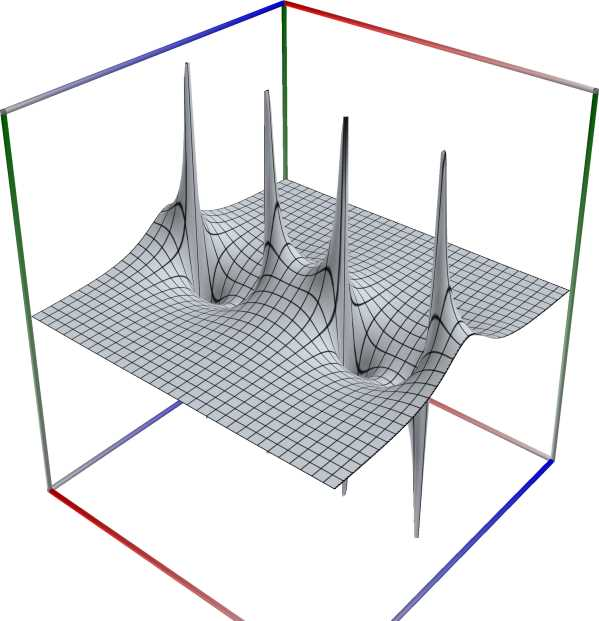
\(\quad\)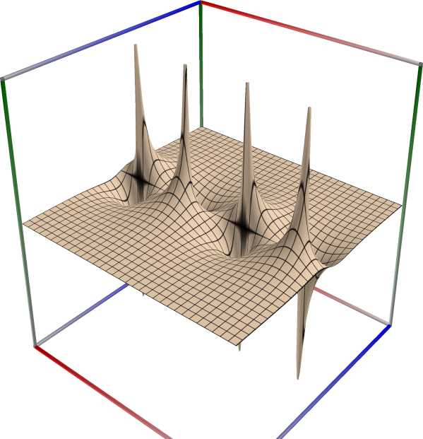
\(\quad\)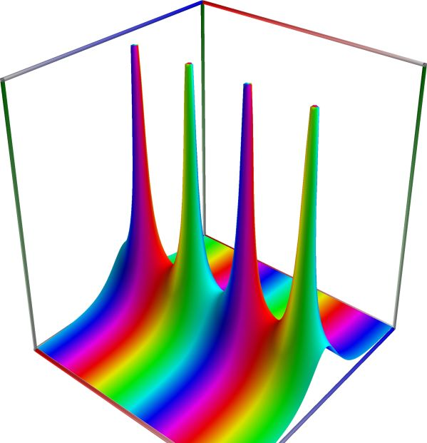
3D wpf plot: real part (left figure), imaginary part (middle figure) and absolute value with color-coded phase (right figure) of the complex sine function \(z = \sin(x + iy)\), with \(-6 \le x \le 6\) (blue axis), \(-6 \le y \le 6\) (red axis), \(-10 \le z \le 10\) (green axis). Function values are loglog-transformed.
An example with real input:
>>> from xlcalcnet import * >>> x = -5.1; dps = 90 >>> for ctx in gui.ctxlist_real: print(ctx.fmtname + ': ' + ctx.fmt(ctx.sech(x))) fpm: 0.012193039911852 mpm: 0.0121930399118520203984885700229994425642753741884496447800969731620488810725511852314845853 dpm: 0.0121930399118520203984885700229994425642753741884496447800969731620488810725511852314845853 ipm: [0.012193039911852020398488570022999442564275374188449644780096973162048881072551185231484585260044, 0.012193039911852020398488570022999442564275374188449644780096973162048881072551185231484585298396] gpm: 0.012193039911852020398488570022999442564275374188449644780096973162048881072551185231484585273 apm: [0.0121930399118520203984885700229994425642753741884496447800969731620488810725511852314845853 +/- 3.12e-92] math53: 0.012193039911852 sreal: 0.01219304 dreal: 0.012193039911852 ereal: -0.012193946383904379095 qreal: 0.0121930399118520203984885700229994 oreal: 0.012193039911852020398488570022999442564275374188449644780096973162048881 mreal: 0.0121930399118520203984885700229994425642753741884496447800969731620488810725511852314845853 sflint: 0.01219304 dflint: 0.012193039911852 eflint: 0.0121930399118520204 qflint: 0.0121930399118520203984885700229994 oflint: 0.012193039911852020398488570022999442564275374188449644780096973162048881 mflint: 0.0121930399118520203984885700229994425642753741884496447800969731620488810725511852314845853 aflint: [0.0121930399118520203984885700229994425642753741884496447800969731620488810725511852314845853 +/- 3.74e-92]
An example with complex input, using C#-style formatting for complex numbers for the result
>>> from xlcalcnet import * >>> x = -5.1+2j; gui.setdps(40) >>> for ctx in [fpm, mpm, cmath53, qcplx]: print(ctx.fmtname + ': ' + ctx.fmt(ctx.sech(x))) fpm: (-0.00507471879083841, 0.0110876385600675) mpm: (-0.005074718790838412755276322709632089649817, 0.01108763856006753770362892102025111385382) cmath53: (-0.00507471879083841, 0.0110876385600675) qcplx: (-0.00507471879083841275527632270963209, 0.0110876385600675377036289210202511)
An example with the same complex input as above, showing only the real part of the result:
>>> from xlcalcnet import * >>> x = -5.1+2j; gui.setdps(90) >>> for ctx in gui.ctxlist_cplx: print(ctx.fmtname + ': ' + ctx.realctx.fmt(ctx.real(ctx.sech(x)))) fpm: -0.00507471879083841 mpm: -0.00507471879083841275527632270963208964981742229500661243301596180528254891951155597774604567 dpm: -0.00507471879083841275527632270963208964981742229500661243301596180528254891951155597774604568 ipm: [-0.0050747187908384127552763227096320896498174222950066124330159618052825489195115559777460456847197, -0.00507471879083841275527632270963208964981742229500661243301596180528254891951155597774604566842] gpm: -0.0050747187908384127552763227096320896498174222950066124330159618052825489195115559777460456751 apm: [-0.0050747187908384127552763227096320896498174222950066124330159618052825489195115559777460457 +/- 2.97e-92] cmath53: -0.00507471879083841 scplx: -0.00507472 dcplx: -0.00507471879083842 ecplx: -0.0050747187908384127559 qcplx: -0.00507471879083841275527632270963209 ocplx: -0.0050747187908384127552763227096320896498174222950066124330159618052825488 mcplx: -0.00507471879083841275527632270963208964981742229500661243301596180528254891951155597774604567 sflintc: -0.005074719 dflintc: -0.00507471879083841 eflintc: -0.0050747187908384127555 qflintc: -0.00507471879083841275527632270963209 oflintc: -0.005074718790838412755276322709632089649817422295006612433015961805282549 mflintc: -0.00507471879083841275527632270963208964981742229500661243301596180528254891951155597774604567 aflintc: [-0.0050747187908384127552763227096320896498174222950066124330159618052825489195115559777460457 +/- 4.64e-92]
An example with the same complex input as above, showing only the imaginary part of the result:
>>> from xlcalcnet import * >>> x = -5.1+2j; gui.setdps(90) >>> for ctx in gui.ctxlist_cplx: print(ctx.fmtname + ': ' + ctx.realctx.fmt(ctx.imag(ctx.sech(x)))) fpm: 0.0110876385600675 mpm: 0.0110876385600675377036289210202511138538221031522454854175828158364444564039554459815046703 dpm: 0.0110876385600675377036289210202511138538221031522454854175828158364444564039554459815046703 ipm: [0.011087638560067537703628921020251113853822103152245485417582815836444456403955445981504670316958, 0.011087638560067537703628921020251113853822103152245485417582815836444456403955445981504670351475] gpm: 0.011087638560067537703628921020251113853822103152245485417582815836444456403955445981504670328 apm: [0.0110876385600675377036289210202511138538221031522454854175828158364444564039554459815046703 +/- 5.68e-92] cmath53: 0.0110876385600675 scplx: 0.01108764 dcplx: 0.0110876385600675 ecplx: 0.011087638560067537704 qcplx: 0.0110876385600675377036289210202511 ocplx: 0.011087638560067537703628921020251113853822103152245485417582815836444456 mcplx: 0.0110876385600675377036289210202511138538221031522454854175828158364444564039554459815046703 sflintc: 0.01108764 dflintc: 0.0110876385600675 eflintc: 0.011087638560067537704 qflintc: 0.0110876385600675377036289210202511 oflintc: 0.011087638560067537703628921020251113853822103152245485417582815836444457 mflintc: 0.0110876385600675377036289210202511138538221031522454854175828158364444564039554459815046703 aflintc: [0.0110876385600675377036289210202511138538221031522454854175828158364444564039554459815046703 +/- 6.26e-92]